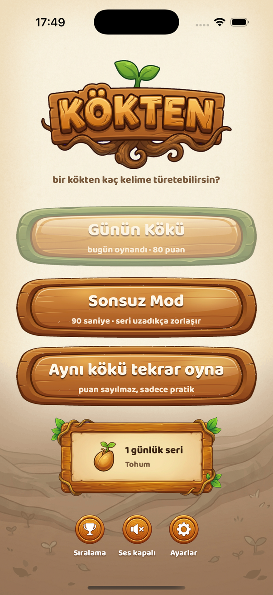
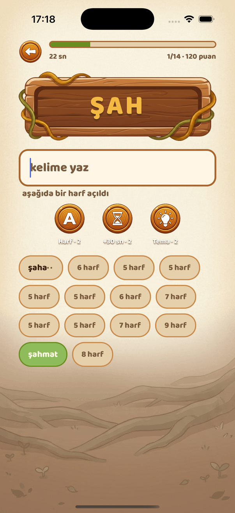
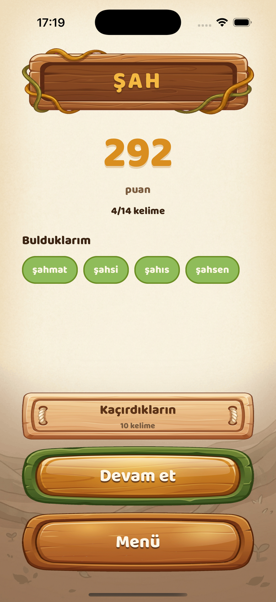
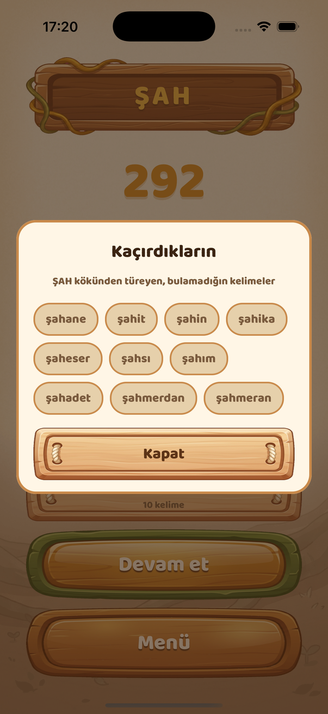
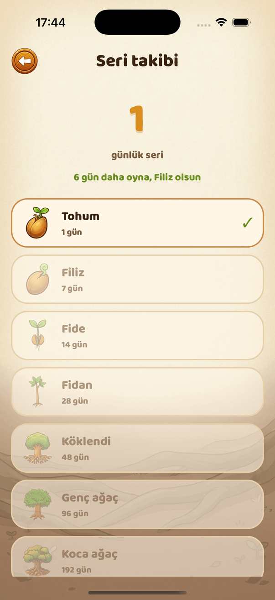

Kökten
Bir kökten kaç kelime türetebilirsin?
iOS · Android · Ücretsiz · Türkçe
Yakında App Store'da
Sana bir Türkçe kök verilir — örneğin GÖZ. Süre dolmadan o kökten türeyen kelimeleri bulmaya çalışırsın: gözlük, gözcü, gözlem, gözlemci… Basit görünür, ta ki süre işlemeye başlayana kadar.





Günün Kökü
Her gün tek bir kök, herkese aynı. Günde bir kez oynanır, 180 saniye sürer. Kaçırdığın kelimeleri turun sonunda görebilirsin.
Sonsuz Mod
Canın istediği kadar oyna. Üst üste oynadıkça tur serin uzar, seri uzadıkça kökler zorlaşır.
Tohumdan koca ağaca
Kesintisiz oynadığın her gün seriyi büyütür: Tohum, Filiz, Fide, Fidan, Köklendi, Genç ağaç, Koca ağaç. Bir iki gün kaçırmak seriyi bozmaz.
Türkçe'ye göre yazıldı
“gozluk” yazsan da gözlük'ü bulur. Türkçe karakter zorunlu değil, doğru yazım ekranda gösterilir.
İnternetsiz çalışır
Sözlük cihazında. Hesap yok, giriş yok, sunucuya hiçbir şey gönderilmiyor. Skorların yalnızca senin telefonunda durur.